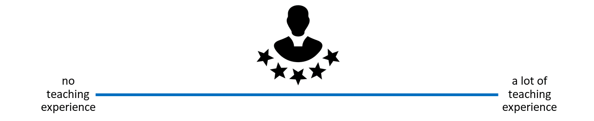
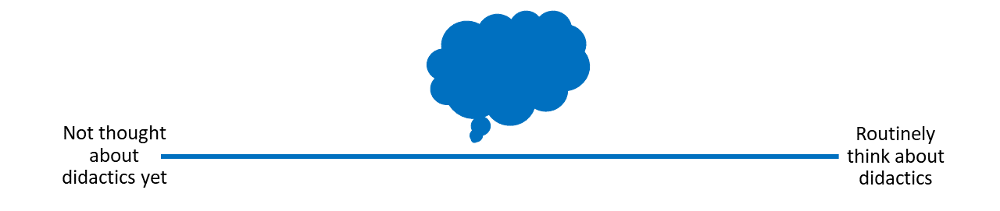
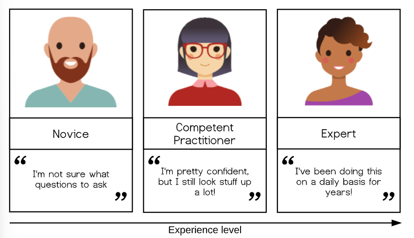
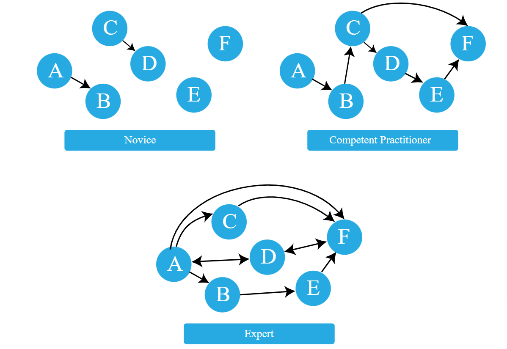
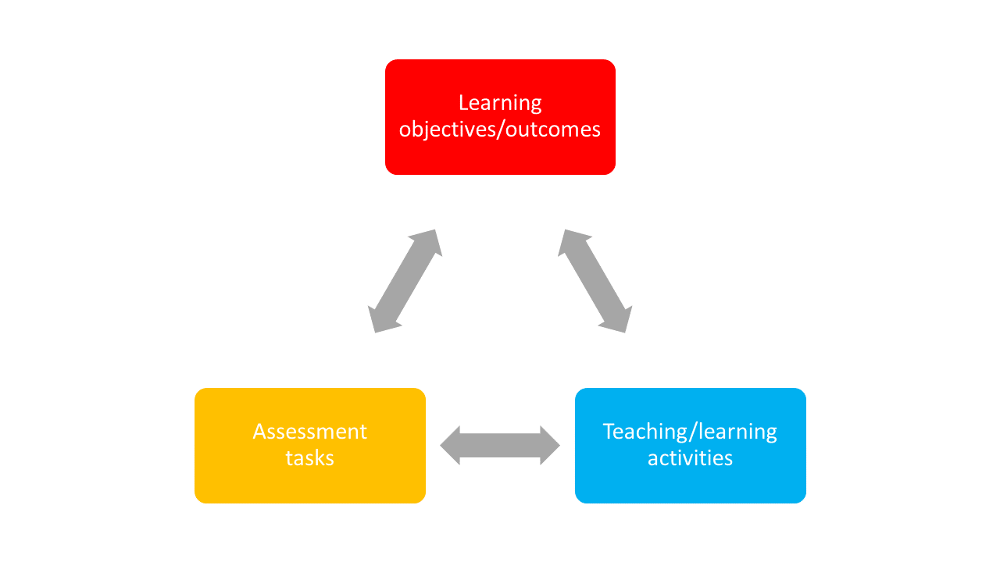
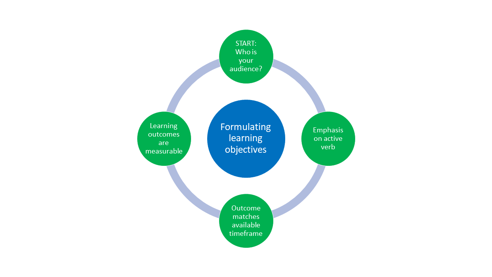
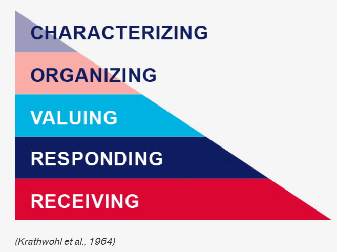

Teaching open research: Core didactic principles
27/08/2026
License

This current work by Sarah von Grebmer zu Wolfsthurn, Sara Lil Middleton and Malika Ihle is licensed under a CC-BY-SA 4.0 Creative Commons Attribution 4.0 International SA License. It permits unrestricted re-use, distribution, and reproduction in any medium, provided the original work is properly cited. If you remix, transform, or build upon the material, you must distribute your contributions under the same license as the original.
Code snippets are dedicated to the public domain and licensed under a CC0 1.0 Creative Commons Universal License. You may use, modify, distribute, and sell the code snippets for any purpose, without permission or attribution. The code snippets are provided “as is”, without warranty of any kind.
Contribution statement
Creator: Von Grebmer zu Wolfsthurn, Sarah ( 0000-0002-6413-3895)
0000-0002-6413-3895)
Reviewer: Middleton, Sara ( 0000-0001-5307-8029)
0000-0001-5307-8029)
Consultant: Ihle, Malika ( 0000-0002-3242-5981)
0000-0002-3242-5981)
Prerequisites
Important
Before completing this submodule, please carefully read about the prerequisites.
| Prerequisite | Description | Where to find this |
|---|---|---|
| Basic familiarity with Open Science concepts and practices | Examples: Replication crisis, open access, R, version control, preregistration, etc. | Click here to get familiar with Open Science first |
Getting started!

https://icons8.com/
How much teaching experience do you have?
- Workshops, peer training, (guest) lectures, seminars, lab presentations etc. on open research topics

How much have you already thought about didactics?
- If and when you teach about open research, do you or would you consider didactic elements in you design and/or teaching style..?

Survey time!
Scan the QR code and select the item Intro-Survey from the list.
Survey time!
Which of the following concepts or skills do you feel most confident about in relation to didactics and teaching? (Select all that apply)
Considering the learner’s prior knowledge in the learning process
Constructivism
Constructive alignment
Mental model of skills acquisition
Formulating clear learning objectives
None of the above
What is your level of familiarity with constructive alignment?
I have never heard of it before.
I have heard of it but have never implemented it in my teaching.
I have a basic working definition in mind and sometimes implement it in my teaching.
I am very familiar and have routinely applied this framework in my teaching.
What is your level of familiarity with the three learning domains (cognitive, affective and psychomotor)?
I have never heard of them before.
I have heard of them but have never considered them in my teaching.
I have a basic understanding and sometimes implement them in my teaching.
I am very familiar and have routinely applied them in my teaching.
Discussion of survey results
What do we see in the results?
Today’s session journey

From
I am not sure what good teaching in open research involves…
to
I feel more confident that I can pass on my knowledge of open research to my learners using evidence-based didactic methods.
Key terms and definitions
Some terms we will come across today…
- Constructivism:
- Constructive alignment:
- Learning objectives:
- Bloom’s taxonomy:
Key terms and definitions
Some terms we will come across today…
- Constructivism: The notion that learners actively build their own understanding of the world rather than absorbing information passively (Sjøberg, 2010).
- Constructive alignment: A teaching approach in which learning objectives, teaching activities, and assessment tasks are aligned so that learners actively construct knowledge and skills (Biggs, 1996).
- Learning objectives: Describe what learners should be able to do after instruction and should specify the intended performance, conditions, and criteria for success.
- Bloom’s taxonomy: A framework for classifying levels of learning and cognitive skills (Bloom et al., 1964), organized from lower-order thinking skills (e.g., remembering and understanding to higher-order skills (analyzing, evaluating).
Learning objectives
At the end of this session, you will…
- Remember basic didactic concepts as the foundation for learning success
- Explain and compare how knowledge can be organized depending on the level of expertise
- Evaluate the alignment between learning objectives, assessment types and teaching activities
- Formulate concrete learning objectives according to specific learning domains for real-world content
What is didactics?
Origins in Ancient Greek
| Greek | Transliteration | Meaning |
|---|---|---|
| διδάσκω | didáskō | to teach; to instruct; to show; to indicate |
| διδακτός | didaktos | taught |
| διδακτικός | didaktikos | apt to teach; able to teach |
Liddell et al. (1996). A Greek–English Lexicon. Oxford University Press.
Didactics …
“…is the science of learning and teaching in general”
(Dolch, 1967)
“…includes teaching and learning strategies […] referring to the design, programming, elaboration and formulation of learning contents in verbal or written form.”
(Casasola Rivera, 2020)
Didactics …
“… encompasses questions about the selection of knowledge, teaching methods, and how learning takes place in different contexts. It can be seen as the planning, implementation, and analysis of teaching, with a particular focus on why certain objectives, content, and methods are chosen.”
@ 2026 Stockholm University
Your turn! What is learning?
What do you connect with this concept? First thoughts? Assumptions? Expectations?
Scan the QR code and select the item What is learning? from the list. Take 2 minutes to brainstorm your thoughts.
What is learning?
“…a process that leads to change, which occurs as a result of experience and increases the potential for improved performance and future learning”
See Lovett et al. (2023). Slide adapted from Laura Carter: “Evidence-based Training” https://zenodo.org/records/18905547. Slide originally licensed under CC BY 4.0: https://creativecommons.org/licenses/by/4.0/
What is learning?
As a process (not a product), learning …
- is learner-centered and something that learners themselves “do”
- is active and self-controlled
- is integrated in a broader context and a positive learning environment
- is shaped by prior knowledge
Efgivia et al. (2021), Lovett et al. (2023). Slide adapted from Laura Carter: “Evidence-based Training” https://zenodo.org/records/18905547. Slide originally licensed under CC BY 4.0: https://creativecommons.org/licenses/by/4.0/
What is learning?
Constructivism: Learning is not passively received, but actively built and shaped by prior knowledge and the learning context.
- Learners are not empty “vessels” to be filled
- They interpret new ideas through the lens of what they already know
- The learning context matters!
- Learning does not happen in isolation, but is shaped by the environment
Fosnot (2013)
The importance of prior knowledge
- Knowledge = facts, concepts, beliefs, values, models, perceptions, attitudes …
Prior knowledge … can help or hinder learning!
- Can be accurate, complete and appropriate for context
- Can be inaccurate, incomplete or inappropriate for context
Your turn! What is an expert?
What does being an expert mean?
What is something that you are an expert in?
How does your experience with a topic differ when you are an expert compared to when you are not an expert?
Go to Section 1 of the Open Science Workshop workbook and navigate to exercise A1. Write down your thoughts. Take 3 minutes for this exercise.
A model of skills acquisition

The organization of (prior) knowledge

Example: A mental model of acquiring Open Access skills
| Level | Can do✅ | Cannot (yet) do❌ |
|---|---|---|
| Novice learners | Recognize that Open Access and publishing licenses exist | Identify different publishing licenses or explain their effects on authors and readers |
| Competent practitioners | Publish papers Open Access and apply open licenses (e.g., Creative Commons) | Explain in-depth differences between Gold, Green, and Diamond OA or navigate complex copyright and licensing issues |
| Experts | Strategically select and apply Open Access routes (Gold, Green, Diamond); choose Creative Commons licenses based on reuse goals; support and train others | — |
Your turn! Sketching mental models
- Pick a topic from open research (different from open access).
- Sketch out the mental model of a novice in comparison to a competent practitioner and/or an expert.
- Provide at least two concrete examples of how the organization of knowledge differs among these types of learners.
Go to Section 1 of the Open Science Workshop workbook and navigate to exercise A2. Work with your neighbor. Take 7 minutes for this exercise.
Recap
- Didactics = planning and organizing successful processes of learners’ learning
- Learning = learners actively construct knowledge through prior knowledge and context rather than passively receive information (constructivism)
- With increasing expertise mental models become more connected
- Effective teaching builds on learners’ existing knowledge and supports their progression from novice to competent practitioner to expert
What would help you organize your knowledge?
Is there something that you are currently learning how to do?
Can you identify things that would help you with organizing your mental model during a workshop?
Think (2 min)
- For yourself: Collect some thoughts for yourself.
Pair (2 min)
- Discuss your
thoughts with your neighbor.
Share (2 min)
- Share your thoughts with the larger
group.
Go to exercise A3 in the workbook and note down your thoughts.
Enhancing the organization of knowledge
Some strategies …
- Provide learners with a big picture or outline of your workshop/course
- Clearly lay out expectations or objectives for a session
- Create opportunities to discover learners’ prior knowledge
- Make connections between concepts explicit
- Encourage learners to make these connections themselves (sorting tasks, concept maps)
- Monitor learners’ work for problems in their knowledge organization or mental model, e.g., add assessment tasks or progress trackers
- Provide direction through clear learning objectives
Constructive alignment
Focus on learning objectives: what do we want our learners to achieve?

Biggs (1996)
Your turn! Matching learning objectives and assessment types
Match each learning objective with an assessment type and reflect the following:
- Why does the assessment type fit the specific learning objective?
- Optional: What teaching activities can you think of that would align with the learning objective and the corresponding assessment type?
Go to Section 1 of the Open Science Workshop workbook and navigate to exercise A4. Work with your partner. Take 8 minutes for this exercise.
Practical activity
| Learning objective | Assessment type |
|---|---|
| A: Create a reproducible research pipeline | 1: Hand in a brief essay on Green open access along with two ethical benefits and two challenges |
| B: Apply FAIR data principles to a dataset | 2: Generate a GitHub project and add project documentation (README) |
| C: Analyze reproducibility issues in published studies | 3: Create a metadata record that is machine-readable |
| D: Understand ethical implications of open access | 4: Write a critical review of the methods section of an open access paper |
Setting learning objectives

Learning objectives: A definition
“… describes what learners should be able to do after instruction and should specify the intended performance, conditions, and criteria for success.”
Mager & Peatt (1962)
“Hierarchy” of learning objectives
What is the general objective of this course?
What are specific individual learning objectives within the course?

Formulating learning objectives

Three domains of learning
| Domain | Focus |
|---|---|
| Cognitive | Knowledge or thinking skills |
| Affective | Growth in feelings or emotional areas (attitude or self), values |
| Psychomotor | Manual or physical skills, change in behaviors |
Stapleton-Corcoran (2023)
Cognitive domain
Learning focused on expanding or building up knowledge and thinking skills as a learning outcome
Widely implemented in education and typically connected to Bloom’s taxonomy
Example:
- Learning objective: Learners will be able to analyze how open science practices improve research transparency and reproducibility
- Teaching activity: Evaluation and comparisons of reproducible and non-reproducible research workflows or published studies in groups
- Assessment task: Group presentation discussing strengths, limitations, and transparency of selected research practices or publications
Cognitive domain

Anderson & Krathwohl (2001)
Affective domain
Learning focused on identifying and developing attitudes and values of learners as learning outcome
Difficult to measure directly, but can be assessed through observable behaviors (e.g., appreciation, showing commitment, awareness of nuances)
Example:
- Learning objective: Learners will actively engage with differing views on the pros and cons of preregistration by asking clarifying questions and incorporating at least one alternative viewpoint into their own arguments
- Teaching activity: Learners participate in a panel discussion in which they argue either the benefits or the limitations of preregistration in scientific research.
- Assessment task: Learners write a reflection essay in which they summarize the arguments presented during the discussion and reflect on how considering both the advantages and disadvantages of preregistration influenced their own perspective on open science practices.
Krathwohl et al. (1964)
Affective domain

Krathwohl et al. (1964)
Recap: Learning objectives within learning domains
| cognitive | affective | psychomotor |
|---|---|---|
| origination | ||
| create | adaptation | |
| evaluate | characterizing | complex overt response |
| analyze | organizing | mechanism |
| apply | valuing | guided response |
| understand | responding | set |
| remember | receiving | perception |
Your turn! Designing assessment tasks
You are tasked to design a course module on Open Research practices and would like to include a lesson on open access publishing.
Design one assessment task and define one observable metric of successfully achieving the learning objective for each learning domain below.
Cognitive domain: Learners will be able to compare different open access publishing models, e.g., Gold, Green and Diamond Open Access and critically assess their advantages and limitations.
Affective domain: Learners will critically reflect on the benefits and challenges of open access publishing and demonstrate openness toward differing perspectives on accessibility and publication costs.
Go to Section 1 of the Open Science Workshop workbook and navigate to exercise A5. Work with your partner. Take 10 minutes for this exercise.
Bonus activity: Formulating learning objectives and assessment methods
Navigate to the following online tutorial: https://lmu-osc.github.io/introduction-to-zotero/.
Skim over the different sections using the navigation menu or the arrows at the bottom of the page to get an idea of the content of the tutorial.
Using Bloom’s taxonomy, formulate two learning objectives and assessment methods that match the content and the teaching activities of the tutorial. Consider the following: Which level of Bloom’s taxonomy are you at and which domain are you targeting?
Go to Section 1 of the Open Science Workshop workbook and navigate to exercise A6. Work in pairs, Take 10 minutes for this activity.
Take-home messages
Learning in an active process, integrated in a larger context and strongly shaped by prior knowledge and beliefs (= constructivism)
Different learners differ in their organization of prior knowledge: experts enjoy more connections and short-cuts among pieces of knowledge
Ensuring that learning objectives, the assessment tasks and the teaching activities align is key for a successful learning process (= constructive alignment)
Before teaching, we need to know where we are going, i.e., formulate learning objectives according to the fitting learning domain(s): cognitive, affective, possibly psychomotor
The formulation matters!
Place a particular emphasis on the verbs when formulating learning objectives!
Survey time!
Scan the QR code and select the item End-Survey from the list.
Survey time!
Which of the following concepts or skills do you now feel most confident about in relation to didactics and teaching? (Select all that apply)
Considering the learner’s prior knowledge in the learning process
Constructivism
Constructive alignment
Mental model of skills acquisition
Formulating clear learning objectives
None of the above
What is your level of confidence now with the mental model of skills acquisition, on a scale from 1 - 5? (1 = not confident at all, 5 = extremely confident)
5
4
3
2
1
What is your level of confidence with the three learning domains (cognitive, affective and psychomotor), on a scale from 1 - 5? (1 = not confident at all, 5 = extremely confident)
5
4
3
2
1
Discussion of survey results
What do we see in the results?
Learning objectives - recap
At the end of this session, you now…
- Remember basic didactic concepts as the foundation for learning success✅
- Explain and compare how knowledge can be organized depending on the level of expertise✅
- Evaluate the alignment between learning objectives, assessment types and teaching activities✅
- Formulate concrete learning objectives according to specific learning domains for real-world content✅
References
Thanks!

LMU Open Science Center